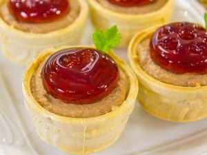

Тарталетки с печеночным паштетом и гранатовым желе
Яркая праздничная закуска. Тарталетки желательно использовать маленькие, из нежного теста. Из указанного количества ингредиентов получается 15–20 тарталеток.
Ингридиенты:

паштет:
300 г куриной печени
100 г лука
100 г моркови
50 мл сливок (10–20%)
100 г творожного сыра (Альметте, Хохланд, Филадельфия)
соль
перец
растительное масло
желе:
100 мл гранатового сока
10 г желатина
1–2 ч.л. сахара
также:
15–20 тарталеток
Приготовление
Готовим желе.
Желатин замочить в 50 мл холодной кипяченой воды и оставить на то время, которое указано на упаковке.
Желатин довести до кипения, но не кипятить.
В сок добавить сахар.
Добавить желатин, перемешать.
Разлить в маленькие формочки (диаметром около 3 см).
Поставить в холодильник до полного застывания (на 2–3 часа).
Готовим паштет.
Лук мелко нарезать.
Морковь натереть на мелкой терке.
Печень нарезать небольшими кусочками.
На растительном масле обжарить лук.
Добавить морковь, обжарить.
Добавить печень.
Посолить, поперчить.
Жарить до готовности (около 10–15 минут).
Печень положить в блендер.
Измельчить.
Добавить сливки, перемешать.
Добавить сыр.
Перемешать.
В тарталетки выложить паштет.
На паштет выложить желе.